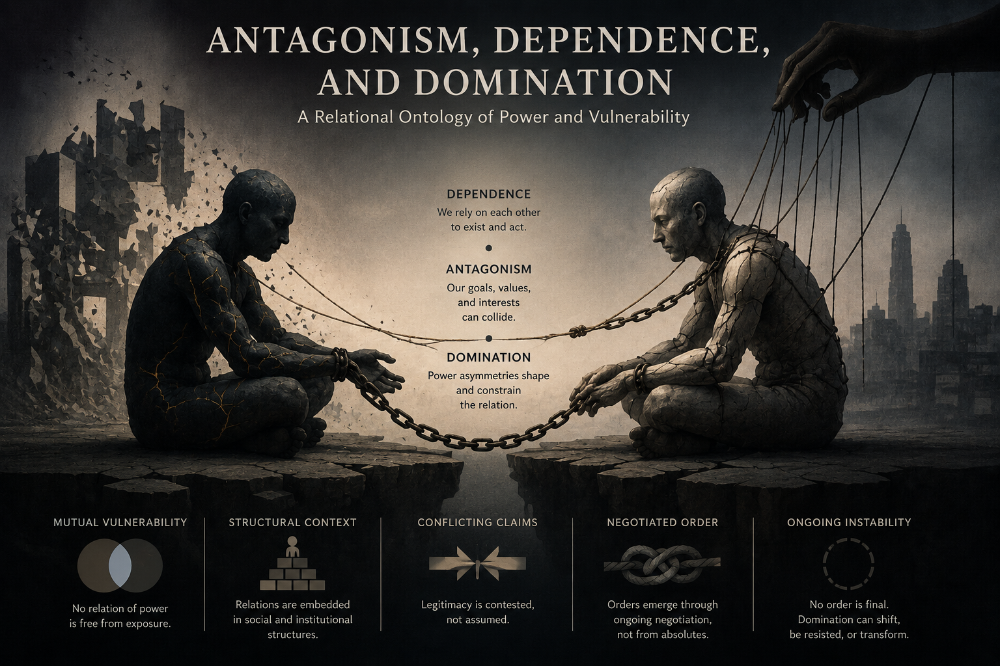

Authority Illusion
The misrecognition of institutional and collective authority as though it originated from the artificial system itself.
AI EthicsAuthority
Read ConceptPhilosophy of AI, institutional judgment, and normative structures.
Artificial intelligence does not decide. Institutions do.

What appears as algorithmic decision-making is often a misdescription of institutional practices that authorize, interpret, and implement system outputs.
My work investigates the transformation of responsibility, judgment, and intelligibility within technological and political systems. Rather than treating artificial intelligence as an autonomous ethical agent, I examine the human and institutional structures that sustain the illusion of autonomous authority.
The site is organized around conceptual frameworks rather than submission status. Each concept functions as a research node with its own illustration, abstract, and related writings.
The misrecognition of institutional and collective authority as though it originated from the artificial system itself.

A condition in which visible harm ceases to interrupt action because procedural correctness replaces ethical judgment.

Responsibility does not disappear in AI systems; it changes form, disperses, and becomes difficult to localize.

Computational outputs become decisions only through institutional interpretation, authorization, and implementation.

A transformation in the conditions of intelligibility under which some questions no longer register as meaningful.

A relational ontology of power, vulnerability, structural asymmetry, and negotiated social order.
Normative Closure and Political Intelligibility
This article argues that normative closure should not be understood primarily as suppression, exclusion, or distorted communication, but as a transformation in the conditions under which critique itself becomes intelligible.